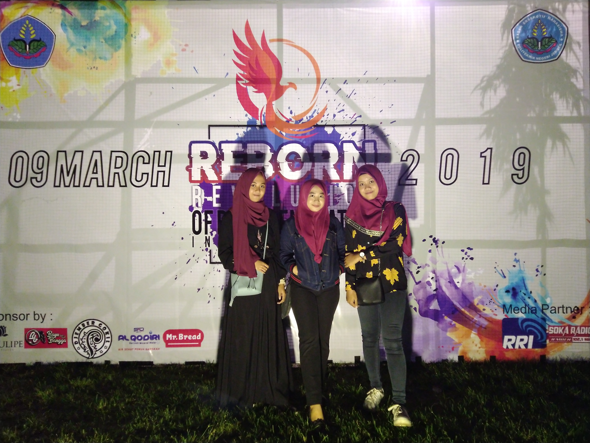
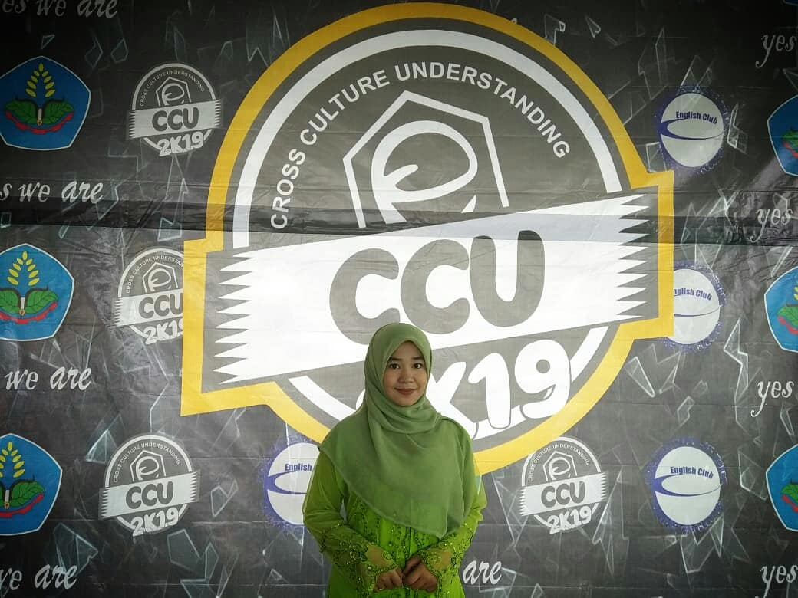
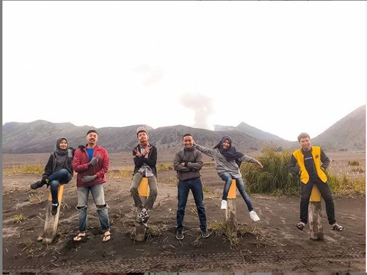

Inilah tugas pertamaku dalam membuat web,hehe..jujur aku bingung mau nulis apa,yang pasti ini pertama kali aku merasa sedikit tertarik
dengan codingan hehehe.Apalagi aku gak punya basic komputer karena aku lulusan madrasah,
intermezo aja ya .
Hai guys!!
kenalin nama ku Rubiatul Al Adawaiyah biasa dipanggil rubi,klo tentang biodata
bisa di back aja ya hehe...
Udah lengkap ko,yang belum ada itu tentang aku jurusan apa,dan alasanku memilih jurusan tersebut. disini aku mau cerita aja
.Aku kuliah di polije
Jawa Timur,gak usah heran kenapa aku bisa kuliah disini banyak dari sebagian teman ku heran kenapa aku mau kuliah di jawa
timur paling ujung lagi,jujur aku taidak tau mungkin ini takdirnya,but i think,for me this is not too bad hehe.
Teknologi informasi inilah jurusan yang aku geluti,tepatnya teknik informatika. Pada awalnya aku merasa salah jurusan ini yang menyebabkan aku
sedikit down,rata-rata temanku berasal dari sekolah kejuruan komputer
mereka sudah punya basic sedangkan aku berlatar belakang madrasah.
Lagi-lagi temanku bertanya kenapa
aku harus mengambil jurusan ini?! dan lagi-lagi aku menjawab "gak tau mungkin takdirnya kali." Jujur setahun sudah aku disini
aku masih bingung,aku gak punya kemampuan apa-apa, tidak sedikit diantara teman ku memberikan motifasi agar tetap
semgangat.Sekarang aku sudah duduk di tinggkat tiga aku harap aku bisa menjalaninya dan aku harap aku buka ntermasuk
produk gagal. Dan sekarang aku mulai mengerti sedikit demi sedikit apa itu TI,aku bersyukur tuhan Berikan kesempatan aku berkumpul dengan org org IT yang hebat
dan tidak semua orng diberikan kesempatan ini menurut ku hehe...
 
Ada yang bilang gini,udah kecebur mending berenang sekalian daripada mati tenggelam. Jadi aku tuh berusaha menyamankan diri hehe...
ntah itu dengan kegiatan dikampus atau ngumpul-ngumpul sama teman ya berusaha buat nyari kesibukan aja sih..Ada banyak wisata di jawa timur
yang sudah ku kunjungi walaupun belum semua. Mulai dari pantai, pegunungan,sampai tempat nongkrongnya anak muda, apalagi di jember ini banyak
sekali cafe murah terjangkau lah buat mahasiswa pada umumya yang mayoritas jauh dari org tua.
aku disini memiliki banyak teman dari berbagai suku dan daerah mulai dari jawa madura dan bali,beda daerah beda budaya,ya memang pada dasarnya
aku senang sekali bersosialisasi. Lagi pula aku disini tidak mempunyai keluarga dan sekarang aku seperti memiliki keluarga baru tidak sedikit dari
teman-temanku yang mengajak ku main kekampungya.
Sekian ceritaku dijawa timur ini sebenarnya aku punya banyak cerita menarik, mungkin dilain waktu aja ya hehe. Semoga aja aku betah sampai akhir ya
dan semoga aku bisa menemukan minat ku di bidang ti ini hehe mohon doanya hehehe ..Sekian terimakasih Jangan lupa ya follow instagramku .